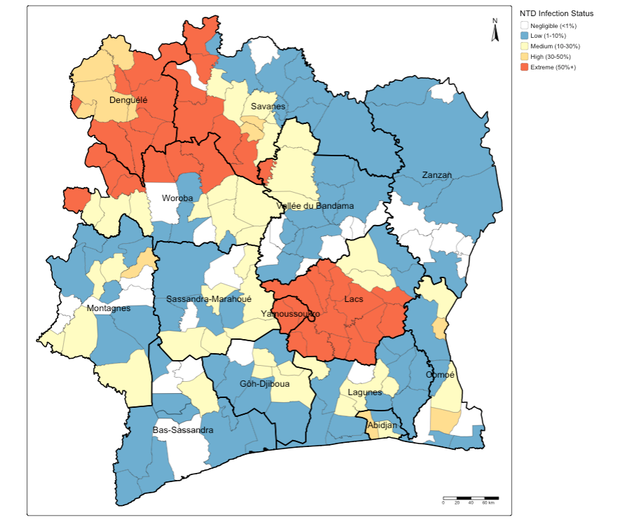
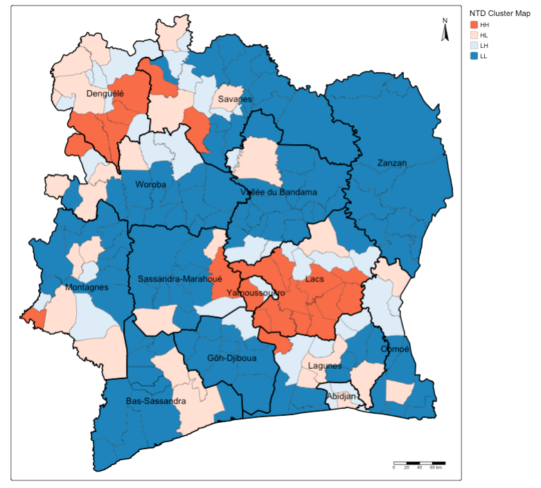
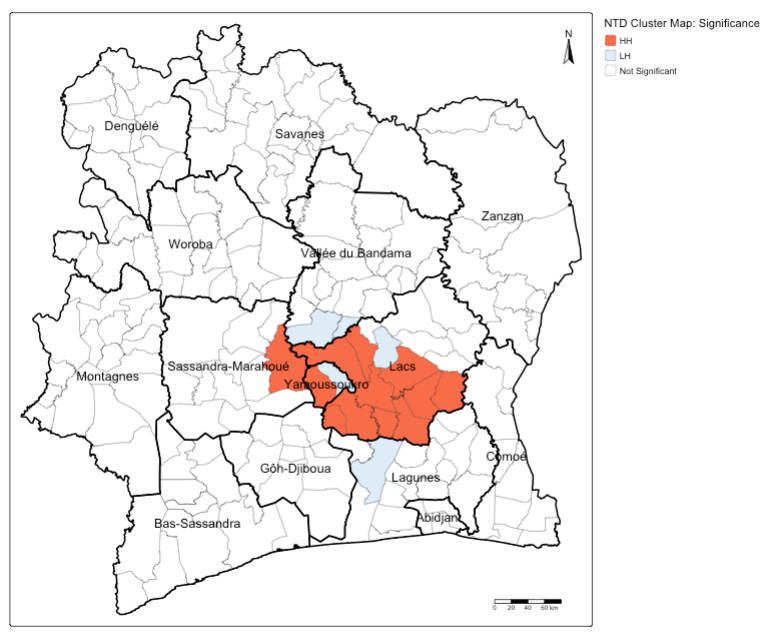

setwd("C:/Users/accountName/Desktop/BISemWeb2025/Day 2")Day 2: Detecting Clusters
1 Introduction
The goal of this session will focus on the key principle of spatial data - spatial dependence. Spatial dependence is the idea that the observed value of a variable in one location is often dependent (to some degree) on the observed value of the “somewhat” same value in a nearby location. For spatial analysis, this dependence can be assessed and measured statistically by considering the level of spatial autocorrelation between values of a specific variable, observed in either different locations or between pairs of variables observed at the same location. Spatial autocorrelation occurs when these values are not independent of one another and instead cluster together across geographic space.
A critical first step of spatial autocorrelation is to define the criteria under which a spatial unit (e.g. an areal or point unit) can be understood as a “neighbour” to another unit. As highlighted in Day 1’s lecture, spatial properties can often take on several meanings (autocorrelation through neighbours, distance decay or spillovers), and as a result, have an impact on the validity and accuracy of spatial analysis. This multiplicity also can be applied to the concept of spatial neighbours which can be defined through adjacency, contiguity or distance-based measures. As the specification of these criteria can impact the results, the definition followed therefore need to be grounded in particular theory that aims to represent the process and variable investigated.
1.1 Learning outcomes
Understanding the notion that spatial dependence refers to the degree of spatial autocorrelation between independently measured values observed in geographical space. We will learn how to estimate global measures of spatial autocorrelation (e.g., Moran’s I) to provide a singular measure of spatial dependence. We will learn how Local indicators of spatial association (LISA) to perform a similar function but yield multiple location-specific measures of spatial dependence.
1.2 Getting started
To enable the efficient, repeatable and reproducible functionality of our work, we will use R-Studio’s ability to create and host code as a script. Before we do anything therefore, we will need to create a new R script: File > New File > R Script. Remember, you can save your script with the quick save shortcuts (e.g. cmd + s (mac) / ctrl + s (windows)).
1.3 Datasets & setting up the work directory
Before you begin, if you have not done so already, please make sure to download all data by clicking here. Create a sub folder called “BISemWeb2025” within your “BISemWeb202” folder stored in the desktop of your personal computer. Make sure to extract all data from the downloaded zip folder and store it into “Day 2” folder. Use your newly open R script and set the work directory to Day 2’s folder.
For Windows, the code for setting the work directory will be:
For MAC, the code for setting the work directory will be:
setwd("/Users/accountName/Desktop/BISemWeb2025/Day 2")1.4 Loading and installing packages
We will need to load the following packages from the previous practicals:
sf: Simple Featurestmap: Thematic Mapping
The above packages sf and tmap should have been installed previously in the last session. Therefore, we do not have to install them again, we only need to activate them using the library() function. There will be some new packages we need to install:
spdep: Provides access to a collection of functions to create spatial weights matrix objects from polygon contiguities, and testing spatial dependencesp: Provides access to a collection of functions for handling different classes and methods for spatial data
# install the packages using the install.package()
install.packages("spdep")
install.packages("sp")
# Load the packages with library()
library("sf")
library("tmap")
library("spdep")
library("sp")2 Case study: Neglected Tropical Disease (NTD) Distribution in Cote d’Ivoire
This session looks at spatial dependence and autocorrelation in detail, focusing on the different methods of assessment. As part of this, we look at how to define spatial neighbours, and how this approach is used to generate spatial weights for use within these spatial autocorrelation methods as well as their potential to generate spatially-explicit variables.
We put these learnings into practice through an analysis of spatial dependence of areal neglected tropical disease data from World Health Organization’s Expanded Special Project for Elimination of Neglected Tropical Diseases (ESPEN), experimenting as an application for detecting clusters of diseases in Cote d’Ivoire. For this practical, we will look at the distribution of NTDs at community-level (level 4) in Cote d’Ivoire.
2.1 Loading our data sets
There are three files (2 shapefiles) that we are going to import into RStudio:
CIV_NTD_Community_ADMIN4.shphas been pre-prepared. It is a community-level shapefile containing 193 areas. It contains seven columns -NAME_3(the name of the community);NAME_1(the name of the district);examined(total number of people surveyed for NTD),positive(total number of people who were positive for an NTD);NTD_prev(estimated prevalence of NTD in a community);NTD_status(defines the endemic status of a community i.e., 1 = “Negligible (<1%)”, 2 = “Low (1-10%)”, 3 = “Medium (10-30%)”, 4 = “High (30-50%)” and 5 = “Extreme (50%+)”); and lastly,PrefID(identifier for areas).CIV_District.shpwhich is a vector layer containing the spatial boundaries of the 14 districts in Cote d’Ivoire.
Let’s load these shapefiles:
# load two boundaries
CIV_ADMIN1 <- read_sf("CIV_District.shp")
CIV_Agg_NTD_ADMIN4 <- read_sf("CIV_NTD_Community_ADMIN4.shp")Let us fully display a map of the endemic status of NTDs in Cote d’Ivoire:
tm_shape(CIV_Agg_NTD_ADMIN4) +
tm_polygons(
fill = "NTD_status",
fill.scale = tm_scale_categorical(values = c("white", "#74add1", "#ffffbf", "#fee08b", "#f46d43"),
labels = c("Negligible (<1%)", "Low (1-10%)", "Medium (10-30%)", "High (30-50%)", "Extreme (50%+)")),
fill.legend = tm_legend(title = "NTD Infection Status", frame = FALSE, position = tm_pos_out()),
fill_alpha = 1, col_alpha = 0.5, col = "black", lwd = 0.5) +
tm_shape(CIV_ADMIN1) + tm_text("NAME_1") +
tm_polygons(fill_alpha = 0, col_alpha = 1, col = "black", lwd = 2) +
tm_compass(type = "arrow", position = c("right", "top")) +
tm_scalebar(position = c("right", "bottom"))
Note
Interpretation: You can see how some of these areas have the same extreme endemicity status of general NTD infection. At face-value, these patterns seem to cluster in neighbouring communities within next-to-door districts such as Denguele, Savanes and Woroba, as well as Yamoussoukro and Lacs.
Let us proceed to test whether these are actual areas for where such NTD disease outcomes are concentrated at.
2.2 Global Moran’s I
With a Global Moran’s I, we can test how “random” the spatial distribution of these values is. Global Moran’s I is a metric between -1 and 1. -1 is a completely even spatial distribution of values, 0 is a “random” distribution, and 1 is a “non-random” distribution of clearly defined clusters.
To calculate the Global Moran’s I, you need an adjacency matrix that contains the information of whether or not an community area in Cote d’Ivoire is next to another. Because of the way Moran’s I functions in R, it is necessary to use the sp and spdep libraries (which we have installed and loaded earlier). As you will see these methods and functions have quite esoteric and complicated syntax. Some of the operations they will do will be similar to the examples shown earlier, but the way they assign and store variables makes it much quicker to run complex spatial operations.
We start by understand the spatial configuration of the study area, simply by view what the area’s ID number is - trust me on this - you will need this visual to do sanity checks!
# see spatial configuration of areas
tm_shape(CIV_Agg_NTD_ADMIN4) +
tm_polygons(fill = "white") + tm_text("PrefID", size = 0.7)
Now, we can make an adjacency matrix adjacency_matrix_community object in which we store for each OA which other OAs are considered to be neighbours.
# create adjacency matrix
adjacency_matrix_community <- poly2nb(CIV_Agg_NTD_ADMIN4)
# sanity checks - ensure all is in alignment
names(adjacency_matrix_community) <- CIV_Agg_NTD_ADMIN4$NAME_4
# check first 10 neighbourhoods, and cross-check with map to examine it the neighbours are right!
head(adjacency_matrix_community, n = 10)##$Abengourou
##[1] 8 10 13 16 23 48 64 132 188
##$`Abidjan-Ville`
##[1] 12 26 83 163
##$Aboisso
##[1] 4 16 34 123
##$Adiake
##[1] 3 34 123 172
##$Adzope
##[1] 6 7 9 10 11 188
##$Affery
##[1] 5 7 10 31 120
##$Agboville
##[1] 5 6 9 17 120 143 158 163 173
##$Agnibilekro
##[1] 1 64 114 132
##$Agou
##[1] 5 7 11 17
##$Akoupe
##[1] 1 5 6 13 31 188This shows the first 10 neighbourhoods in the list, and which neighbourhoods are sharing borders. You can cross-check the information with the map to ensure that the adjacency matrix is in order. This is just for sanity-checks!
Next, we need to assign weights to each neighbouring polygons formed around a community. In our case, each neighbouring polygon will be assigned equal weight with style='W'. After this, we can calculate a value for the Global Moran’s I.
# global Moran's I test
moran.test(CIV_Agg_NTD_ADMIN4$positive, community_weights_list)## Moran I test under randomisation
##data: CIV_Agg_NTD_ADMIN4$positive
##weights: community_weights_list
##Moran I statistic standard deviate = 7.5212, p-value = 2.714e-14
##alternative hypothesis: greater
##sample estimates:
##Moran I statistic Expectation Variance
## 0.319104147 -0.005208333 0.001859321 The Global Moran’s I seems to indicate that there is indeed some spatial autocorrelation in our data, however, this is just a quick way to check the score. To do so properly we need to compare our score a randomly distributed version of the variables. We can do this by using something called a Monte Carlo simulation.
# run a Monte Carlo simulation 599 times
moran.mc(CIV_Agg_NTD_ADMIN4$positive, community_weights_list, nsim=1000)## Monte-Carlo simulation of Moran I
##data: CIV_Agg_NTD_ADMIN4$positive
##weights: community_weights_list
##number of simulations + 1: 1001
##statistic = 0.3191, observed rank = 1001, p-value = 0.000999
##alternative hypothesis: greaterThis model shows that our distribution of NTDs differs significantly from a random distribution. As such, we can conclude that there is significant spatial autocorrelation in our NTD data set.
2.3 Local Moran’s I (or LISA)
With a measurement of local spatial autocorrelation we could find hotspots of theft that are surrounded by areas of much lower NTDs. According to the previous global statistic these are not randomly distributed pockets but would be outliers against the general trend of clusteredness! These could be areas that contain very specific locations, where interventions could be made that drastically reduce the rate of disease rather than other areas where there is a high level of ambient disease.
# local Moran's I test
local_moran_CIV_NTD <- localmoran(CIV_Agg_NTD_ADMIN4$positive, community_weights_list)Remember in the lecture the following conditions:

To properly utilise these local statistics and make an intuitively useful map, we need to combine them with our disease positive count variable. Because of the way the new variable will be calculated, we first need to rescale our variable so that the mean is 0.
# rescale
CIV_Agg_NTD_ADMIN4$scale_positive <- scale(CIV_Agg_NTD_ADMIN4$positive)To compare this rescaled value against its neighbours, we subsequently need to create a new column that carries information about the neighbours. This is called a spatial lag function. The “lag” just refers to the fact you are comparing one observation against another, this can also be used between timed observations. In this case, the “lag” we are looking at is between neighbours.
# create a spatial lag variable
CIV_Agg_NTD_ADMIN4$scale_lag_positive <- lag.listw(community_weights_list, CIV_Agg_NTD_ADMIN4$scale_positive)To make a human readable version of the map we will generate some labels for our findings from the Local Moran’s I stats. This process calculates what the value of each polygon is compared to its neighbours and works out if they are similar or dissimilar and in which way, then gives them a text label to describe the relationship.
# MAP 1: VERSION WITH FULL CLUSTER HH, HL, LH, LL DETAILS
# classification without significance value
CIV_Agg_NTD_ADMIN4$ClusterID <- NA
CIV_Agg_NTD_ADMIN4$ClusterID[CIV_Agg_NTD_ADMIN4$scale_positive > 0 & CIV_Agg_NTD_ADMIN4$scale_lag_positive > 0] <- 1
CIV_Agg_NTD_ADMIN4$ClusterID[CIV_Agg_NTD_ADMIN4$scale_positive > 0 & CIV_Agg_NTD_ADMIN4$scale_lag_positive < 0] <- 2
CIV_Agg_NTD_ADMIN4$ClusterID[CIV_Agg_NTD_ADMIN4$scale_positive < 0 & CIV_Agg_NTD_ADMIN4$scale_lag_positive > 0] <- 3
CIV_Agg_NTD_ADMIN4$ClusterID[CIV_Agg_NTD_ADMIN4$scale_positive < 0 & CIV_Agg_NTD_ADMIN4$scale_lag_positive < 0] <- 4Now let’s see how the clusters are arranged spatially.
# MAP 1
tm_shape(CIV_Agg_NTD_ADMIN4) +
tm_polygons(
fill = "ClusterID",
fill.scale = tm_scale_categorical(values = c("#f46d43", "#fee0d2", "#deebf7", "#3182bd"),
labels = c("HH", "HL", "LH", "LL")),
fill.legend = tm_legend(title = "NTD Cluster Map", frame = FALSE, position = tm_pos_out()),
fill_alpha = 1, col_alpha = 0.5, col = "black", lwd = 0.5) +
tm_shape(CIV_ADMIN1) + tm_text("NAME_1") +
tm_polygons(fill_alpha = 0, col_alpha = 1, col = "black", lwd = 2) +
tm_compass(type = "arrow", position = c("right", "top")) +
tm_scalebar(position = c("right", "bottom"))
Important
Interpretation: You can see how some of the areas that had extreme endemic status of NTD infection being classed as High-High cluster in most parts of Denguele and Lacs, as well as small pockets of communities in Savanes and Sassandra-Marahoue and Lagunes.
Let us now find which of these clusters are statistically significant, we create a final label to define clusters that are significant based on the p-value 0.05:
# MAP 2: VERSION WITH SIGNIFICANCE
# create indicator for cluster map with statistical significance
CIV_Agg_NTD_ADMIN4$Sig_ID <- NA
CIV_Agg_NTD_ADMIN4$Sig_ID[CIV_Agg_NTD_ADMIN4$scale_positive > 0 & CIV_Agg_NTD_ADMIN4$scale_lag_positive > 0 & local_moran_CIV_NTD[,5] < 0.05] <- 1
CIV_Agg_NTD_ADMIN4$Sig_ID[CIV_Agg_NTD_ADMIN4$scale_positive > 0 & CIV_Agg_NTD_ADMIN4$scale_lag_positive < 0 & local_moran_CIV_NTD[,5] < 0.05] <- 2
CIV_Agg_NTD_ADMIN4$Sig_ID[CIV_Agg_NTD_ADMIN4$scale_positive < 0 & CIV_Agg_NTD_ADMIN4$scale_lag_positive > 0 & local_moran_CIV_NTD[,5] < 0.05] <- 3
CIV_Agg_NTD_ADMIN4$Sig_ID[CIV_Agg_NTD_ADMIN4$scale_positive < 0 & CIV_Agg_NTD_ADMIN4$scale_lag_positive < 0 & local_moran_CIV_NTD[,5] < 0.05] <- 4
CIV_Agg_NTD_ADMIN4$Sig_ID[local_moran_CIV_NTD[,5] >= 0.05] <- 5
# note what was categorised
table(CIV_Agg_NTD_ADMIN4$Sig_ID)Now let’s see how the significant clusters are arranged spatially.
# MAP 2
tm_shape(CIV_Agg_NTD_ADMIN4) +
tm_polygons(
fill = "Sig_ID",
fill.scale = tm_scale_categorical(values = c("#f46d43", "#deebf7", "white"),
labels = c("HH", "LH", "Not Significant")),
fill.legend = tm_legend(title = "NTD Cluster Map: Significance", frame = FALSE, position = tm_pos_out()),
fill_alpha = 1, col_alpha = 0.5, col = "black", lwd = 0.5) +
tm_shape(CIV_ADMIN1) + tm_text("NAME_1") +
tm_polygons(fill_alpha = 0, col_alpha = 1, col = "black", lwd = 2) +
tm_compass(type = "arrow", position = c("right", "top")) +
tm_scalebar(position = c("right", "bottom"))
Important
Interpretation: You can see that the areas with extreme endemic status of NTD infection in Lacs are statistically significant as High-High cluster, meaning that this disease pattern is not due by chance. There are few community areas that surround these significant High-High locations, which are significant Low-High meaning that they have the potential to transition to High-High cluster. Public health authorities, based on the evidence, should look into these areas in Lacs
3 Data Sources
- Expanded Special Project for Elimination of Neglected Tropical Diseases (ESPEN)[Source: World Health Organisation (WHO)] Click Here
- Shapefiles for Cote d’Ivoire [Source: Database of Global Adminstrative Areas (GADM)] Click Here